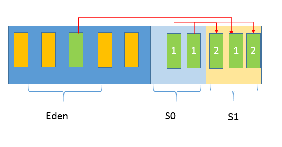
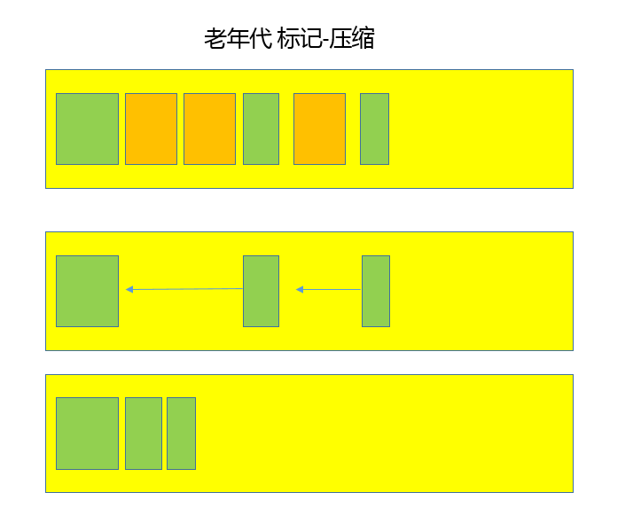

第27讲 | Java常见的垃圾收集器有哪些？
垃圾收集机制是 Java 的招牌能力，极大地提高了开发效率。如今，垃圾收集几乎成为现代语言的标配，即使经过如此长时间的发展， Java 的垃圾收集机制仍然在不断的演进中，不同大小的设备、不同特征的应用场景，对垃圾收集提出了新的挑战，这当然也是面试的热点。
今天我要问你的问题是，Java 常见的垃圾收集器有哪些？
典型回答
实际上，垃圾收集器（GC，Garbage Collector）是和具体 JVM 实现紧密相关的，不同厂商（IBM、Oracle），不同版本的 JVM，提供的选择也不同。接下来，我来谈谈最主流的 Oracle JDK。
- Serial GC，它是最古老的垃圾收集器，“Serial”体现在其收集工作是单线程的，并且在进行垃圾收集过程中，会进入臭名昭著的“Stop-The-World”状态。当然，其单线程设计也意味着精简的 GC 实现，无需维护复杂的数据结构，初始化也简单，所以一直是 Client 模式下 JVM 的默认选项。 从年代的角度，通常将其老年代实现单独称作 Serial Old，它采用了标记 - 整理（Mark-Compact）算法，区别于新生代的复制算法。 Serial GC 的对应 JVM 参数是：
-XX:+UseSerialGC
- ParNew GC，很明显是个新生代 GC 实现，它实际是 Serial GC 的多线程版本，最常见的应用场景是配合老年代的 CMS GC 工作，下面是对应参数
-XX:+UseConcMarkSweepGC -XX:+UseParNewGC
- CMS（Concurrent Mark Sweep） GC，基于标记 - 清除（Mark-Sweep）算法，设计目标是尽量减少停顿时间，这一点对于 Web 等反应时间敏感的应用非常重要，一直到今天，仍然有很多系统使用 CMS GC。但是，CMS 采用的标记 - 清除算法，存在着内存碎片化问题，所以难以避免在长时间运行等情况下发生 full GC，导致恶劣的停顿。另外，既然强调了并发（Concurrent），CMS 会占用更多 CPU 资源，并和用户线程争抢。
- Parrallel GC，在早期 JDK 8 等版本中，它是 server 模式 JVM 的默认 GC 选择，也被称作是吞吐量优先的 GC。它的算法和 Serial GC 比较相似，尽管实现要复杂的多，其特点是新生代和老年代 GC 都是并行进行的，在常见的服务器环境中更加高效。 开启选项是：
-XX:+UseParallelGC
另外，Parallel GC 引入了开发者友好的配置项，我们可以直接设置暂停时间或吞吐量等目标，JVM 会自动进行适应性调整，例如下面参数：
-XX:MaxGCPauseMillis=value
-XX:GCTimeRatio=N // GC 时间和用户时间比例 = 1 / (N+1)
- G1 GC 这是一种兼顾吞吐量和停顿时间的 GC 实现，是 Oracle JDK 9 以后的默认 GC 选项。G1 可以直观的设定停顿时间的目标，相比于 CMS GC，G1 未必能做到 CMS 在最好情况下的延时停顿，但是最差情况要好很多。 G1 GC 仍然存在着年代的概念，但是其内存结构并不是简单的条带式划分，而是类似棋盘的一个个 region。Region 之间是复制算法，但整体上实际可看作是标记 - 整理（Mark-Compact）算法，可以有效地避免内存碎片，尤其是当 Java 堆非常大的时候，G1 的优势更加明显。 G1 吞吐量和停顿表现都非常不错，并且仍然在不断地完善，与此同时 CMS 已经在 JDK 9 中被标记为废弃（deprecated），所以 G1 GC 值得你深入掌握。
考点分析
今天的问题是考察你对 GC 的了解，GC 是 Java 程序员的面试常见题目，但是并不是每个人都有机会或者必要对 JVM、GC 进行深入了解，我前面的总结是为不熟悉这部分内容的同学提供一个整体的印象。
对于垃圾收集，面试官可以循序渐进从理论、实践各种角度深入，也未必是要求面试者什么都懂。但如果你懂得原理，一定会成为面试中的加分项。在今天的讲解中，我侧重介绍比较通用、基础性的部分：
- 垃圾收集的算法有哪些？如何判断一个对象是否可以回收？
- 垃圾收集器工作的基本流程。
另外，Java 一直处于非常迅速的发展之中，在最新的 JDK 实现中，还有多种新的 GC，我会在最后补充，除了前面提到的垃圾收集器，看看还有哪些值得关注的选择。
知识扩展
垃圾收集的原理和基础概念
第一，自动垃圾收集的前提是清楚哪些内存可以被释放。这一点可以结合我前面对 Java 类加载和内存结构的分析，来思考一下。
主要就是两个方面，最主要部分就是对象实例，都是存储在堆上的；还有就是方法区中的元数据等信息，例如类型不再使用，卸载该 Java 类似乎是很合理的。
对于对象实例收集，主要是两种基本算法，引用计数和可达性分析。
- 引用计数算法，顾名思义，就是为对象添加一个引用计数，用于记录对象被引用的情况，如果计数为 0，即表示对象可回收。这是很多语言的资源回收选择，例如因人工智能而更加火热的 Python，它更是同时支持引用计数和垃圾收集机制。具体哪种最优是要看场景的，业界有大规模实践中仅保留引用计数机制，以提高吞吐量的尝试。 Java 并没有选择引用计数，是因为其存在一个基本的难题，也就是很难处理循环引用关系。
- 另外就是 Java 选择的可达性分析，Java 的各种引用关系，在某种程度上，将可达性问题还进一步复杂化，具体请参考专栏第 4 讲，这种类型的垃圾收集通常叫作追踪性垃圾收集（Tracing Garbage Collection）。其原理简单来说，就是将对象及其引用关系看作一个图，选定活动的对象作为 GC Roots，然后跟踪引用链条，如果一个对象和 GC Roots 之间不可达，也就是不存在引用链条，那么即可认为是可回收对象。JVM 会把虚拟机栈和本地方法栈中正在引用的对象、静态属性引用的对象和常量，作为 GC Roots。
方法区无用元数据的回收比较复杂，我简单梳理一下。还记得我对类加载器的分类吧，一般来说初始化类加载器加载的类型是不会进行类卸载（unload）的；而普通的类型的卸载，往往是要求相应自定义类加载器本身被回收，所以大量使用动态类型的场合，需要防止元数据区（或者早期的永久代）不会 OOM。在 8u40 以后的 JDK 中，下面参数已经是默认的：
-XX:+ClassUnloadingWithConcurrentMark
第二，常见的垃圾收集算法，我认为总体上有个了解，理解相应的原理和优缺点，就已经足够了，其主要分为三类：
- 复制（Copying）算法，我前面讲到的新生代 GC，基本都是基于复制算法，过程就如专栏上一讲所介绍的，将活着的对象复制到 to 区域，拷贝过程中将对象顺序放置，就可以避免内存碎片化。 这么做的代价是，既然要进行复制，既要提前预留内存空间，有一定的浪费；另外，对于 G1 这种分拆成为大量 region 的 GC，复制而不是移动，意味着 GC 需要维护 region 之间对象引用关系，这个开销也不小，不管是内存占用或者时间开销。
- 标记 - 清除（Mark-Sweep）算法，首先进行标记工作，标识出所有要回收的对象，然后进行清除。这么做除了标记、清除过程效率有限，另外就是不可避免的出现碎片化问题，这就导致其不适合特别大的堆；否则，一旦出现 Full GC，暂停时间可能根本无法接受。
- 标记 - 整理（Mark-Compact），类似于标记 - 清除，但为避免内存碎片化，它会在清理过程中将对象移动，以确保移动后的对象占用连续的内存空间。
注意，这些只是基本的算法思路，实际 GC 实现过程要复杂的多，目前还在发展中的前沿 GC 都是复合算法，并且并行和并发兼备。
如果对这方面的算法有兴趣，可以参考一本比较有意思的书《垃圾回收的算法与实现》，虽然其内容并不是围绕 Java 垃圾收集，但是对通用算法讲解比较形象。
垃圾收集过程的理解
我在专栏上一讲对堆结构进行了比较详细的划分，在垃圾收集的过程，对应到 Eden、Survivor、Tenured 等区域会发生什么变化呢？
这实际上取决于具体的 GC 方式，先来熟悉一下通常的垃圾收集流程，我画了一系列示意图，希望能有助于你理解清楚这个过程。
第一，Java 应用不断创建对象，通常都是分配在 Eden 区域，当其空间占用达到一定阈值时，触发 minor GC。仍然被引用的对象（绿色方块）存活下来，被复制到 JVM 选择的 Survivor 区域，而没有被引用的对象（黄色方块）则被回收。注意，我给存活对象标记了“数字 1”，这是为了表明对象的存活时间。

第二， 经过一次 Minor GC，Eden 就会空闲下来，直到再次达到 Minor GC 触发条件，这时候，另外一个 Survivor 区域则会成为 to 区域，Eden 区域的存活对象和 From 区域对象，都会被复制到 to 区域，并且存活的年龄计数会被加 1。 
第三， 类似第二步的过程会发生很多次，直到有对象年龄计数达到阈值，这时候就会发生所谓的晋升（Promotion）过程，如下图所示，超过阈值的对象会被晋升到老年代。这个阈值是可以通过参数指定：
-XX:MaxTenuringThreshold=<N>

后面就是老年代 GC，具体取决于选择的 GC 选项，对应不同的算法。下面是一个简单标记 - 整理算法过程示意图，老年代中的无用对象被清除后， GC 会将对象进行整理，以防止内存碎片化。

通常我们把老年代 GC 叫作 Major GC，将对整个堆进行的清理叫作 Full GC，但是这个也没有那么绝对，因为不同的老年代 GC 算法其实表现差异很大，例如 CMS，“concurrent”就体现在清理工作是与工作线程一起并发运行的。
GC 的新发展
GC 仍然处于飞速发展之中，目前的默认选项 G1 GC 在不断的进行改进，很多我们原来认为的缺点，例如串行的 Full GC、Card Table 扫描的低效等，都已经被大幅改进，例如， JDK 10 以后，Full GC 已经是并行运行，在很多场景下，其表现还略优于 Parallel GC 的并行 Full GC 实现。
即使是 Serial GC，虽然比较古老，但是简单的设计和实现未必就是过时的，它本身的开销，不管是 GC 相关数据结构的开销，还是线程的开销，都是非常小的，所以随着云计算的兴起，在 Serverless 等新的应用场景下，Serial GC 找到了新的舞台。
比较不幸的是 CMS GC，因为其算法的理论缺陷等原因，虽然现在还有非常大的用户群体，但是已经被标记为废弃，如果没有组织主动承担 CMS 的维护，很有可能会在未来版本移除。
如果你有关注目前尚处于开发中的 JDK 11，你会发现，JDK 又增加了两种全新的 GC 方式，分别是：
- Epsilon GC，简单说就是个不做垃圾收集的 GC，似乎有点奇怪，有的情况下，例如在进行性能测试的时候，可能需要明确判断 GC 本身产生了多大的开销，这就是其典型应用场景。
- ZGC，这是 Oracle 开源出来的一个超级 GC 实现，具备令人惊讶的扩展能力，比如支持 T bytes 级别的堆大小，并且保证绝大部分情况下，延迟都不会超过 10 ms。虽然目前还处于实验阶段，仅支持 Linux 64 位的平台，但其已经表现出的能力和潜力都非常令人期待。
当然，其他厂商也提供了各种独具一格的 GC 实现，例如比较有名的低延迟 GC，Zing和Shenandoah等，有兴趣请参考我提供的链接。
今天，作为 GC 系列的第一讲，我从整体上梳理了目前的主流 GC 实现，包括基本原理和算法，并结合我前面介绍过的内存结构，对简要的垃圾收集过程进行了介绍，希望能够对你的相关实践有所帮助。
一课一练
关于今天我们讨论的题目你做到心中有数了吗？今天谈了一堆的理论，思考一个实践中的问题，你通常使用什么参数去打开 GC 日志呢？还会额外添加哪些选项？